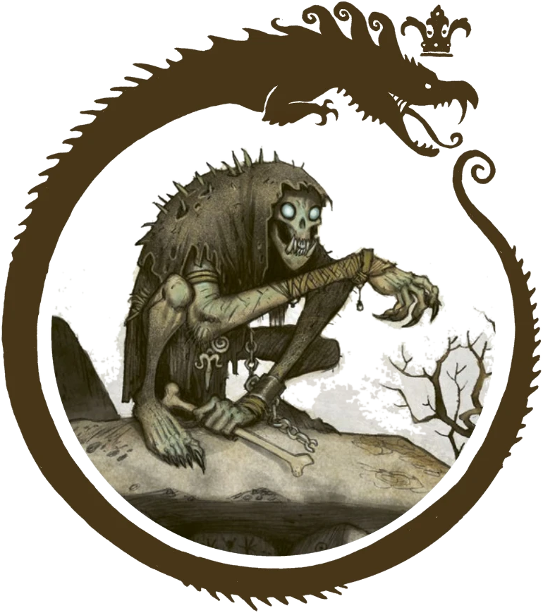
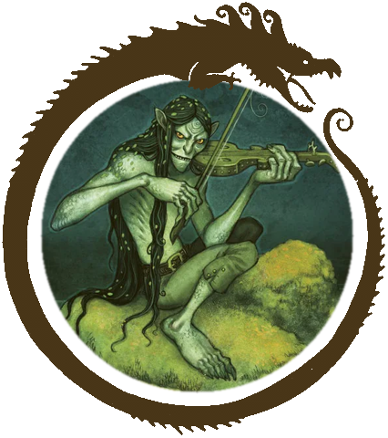
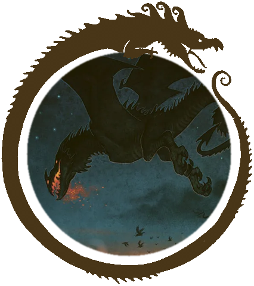
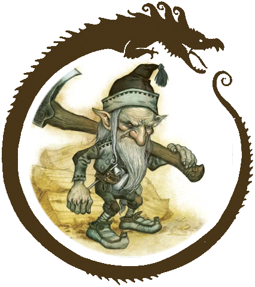
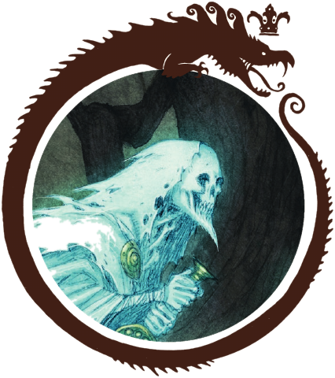

Mysterien
GrundregelwerkEinführung

Der Tanz der TräumeUpsala
Seasons of MysteryMysteriensammlungVorwort

FrühlingEin Tanz mit dem TodDalarna

SommerFeuerherzSmålandCountdown 1 / 4

HerbstDer Teufel im MoorJütland

WinterEin WintermärchenIngermanland
A Wicked SecretMysteriensammlung

Das Silber des Meeres

Ein böses Geheimnis

Die Nachtsau

Das Lied vom fallenden Stern
City of My NightmaresKampagne · StockholmEinführung

Teil 1Witterung eines Mörders

Teil 2Lied an den Mond

Teil 3Die Spukbibliothek

Teil 4Stadt meiner Albträume
The Lost Mountain SagaKampagne · LapplandEinführung

Teil 1Pflicht und Verzweiflung

Teil 2Der Beginn des Falls

Teil 3Wo die Sonne stirbt

Teil 4Der Prinz und die Hexe

Teil 5Die Saga vom verlorenen Berg